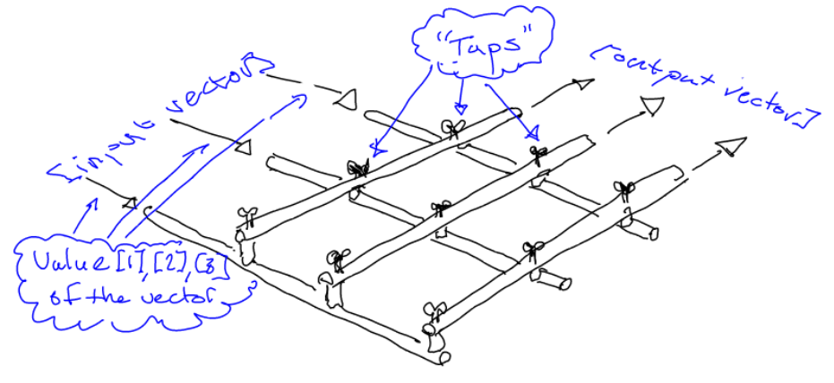
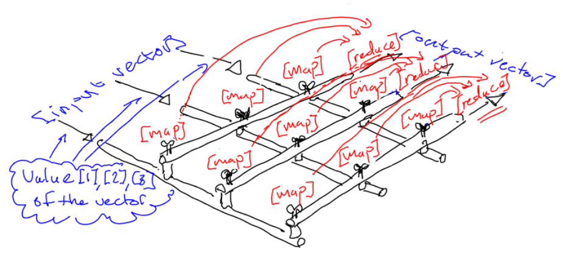

The matrix transformation as a model for declarative atomic data flow operations
After just reading on Hacker News about Google’s newly released TensorFlow library , for deep learning based on tensors and data flow, I realized I wrote in a draft post back in 2013 that:
“What if one could have a fully declarative “matrix language” in which all data transformations ever needed could be declaratively defined in a way that is very easy to comprehend?”
… so, I thought this is a good time to post this draft, to see whether it spurs any further ideas. The following is an almost “as is” copy and paste of that document from December 2013:
What is a Matrix? An analogy from physical water pipes
A matrix is a transformation of vectors. Vectors are one-dimensional arrays of (typically numeric) values, while a matrix is a two dimensional array, representing a transformation of one-dimensional vectors into other one-dimensional vectors.
The idea with the matrix pretty much to function as a “conversion table”, where you could imagine that the input values (from a vector) are represented as, let’s say, the rows, while the output values are represented by the columns.
Each cell in the translation matrix will be a numerical value that will be multiplied to the input value coming in on the corresponding row (in our example). The output for a specific column (which will be one value in the one-dimensional output vector) will be the sum of all the values resulting from taking the input values from the input vector, and multiplying them each with the corresponding factor value in each cell in the column in question.
As an analogy, one can imagine a matrix as a two-dimensional grid of water pipes, where water streams into the grid from one side (let’s say the left side), while streaming out on another, orthogonal side (let’s say the upper side). Then on each cross-section, there is a tap with which you can adjust, for every output pipe, how much of the water in the input pipes will go out on that particular output pipe.
Let’s illustrate this with an image:

What about the relation between matrices and data flow?
It seems that this way of representing and executing a transformation is effectively a kind of atomic data flow (the output will be produced fully only after the full input is produced, and no meaningful intermediate state will be passed in between).
It should thus be very interesting to research how this analogy could be used in the area of dataflow / flow based programming , to make the data transformations happening in the processes to be more declarative.
What if one could have a fully declarative “matrix language” in which all data transformations ever needed could be declaratively defined in a way that is very easy to comprehend?
[EDIT]: More precisely, it would be a declarative language for describing general atomic operations between dataflow streams.
There are some things that might be interesting to explore with this idea:
-
Could this make it easier to make transformations more easily run in parallel, using so called SIMD instructions in the CPU? The fact that the transformations are atomic should help to this end.
-
How would one extend the idea to general data types, not just linear transformations? Could the notion of a spreadsheet be helpful here? The difference for a spreadsheet is that the definition of the transformation is done solely in the “resulting box”, whereas in a matrix, there are in fact two transformations done: One (the multiplication) is done for each of the incoming data items, while the other one (the summation of all the multiplied values) is done for the individually transformed values.
-
In fact, this leads directly to the Map / Reduce paradigm. The map operation is done for each incoming data item, while reduce is done to “collect” or “collapse” the mapped values into a result … so then the Map and the reduce steps are completely up to the developer to implement, and can be different for each column, or even column/row combination! → That definitely should make the computation at least partly very well parallelizable (the map step!)
So, in terms of the flowing water mixer, if we write out where the maps and reduces happen, it would look something like this:

… where the map happens in every “tap”, while the reduce steps happens once for each “column” of taps (shown with the red arrows).
-
There is a question though, about what to represent as the “dimensions” here though. In linear algebra one often has a good sense of what the numerical values for the different positions in an array means (such as x,y,z coordinates in space), but when dealing with custom data structures, it might be more ambiguous, which means that there will be a different matrix design for every data structure … or else: IF we could have a universal set of field types, a sparse matrix representation, spanning (including) all these possible values both on its input and output sides, could do.